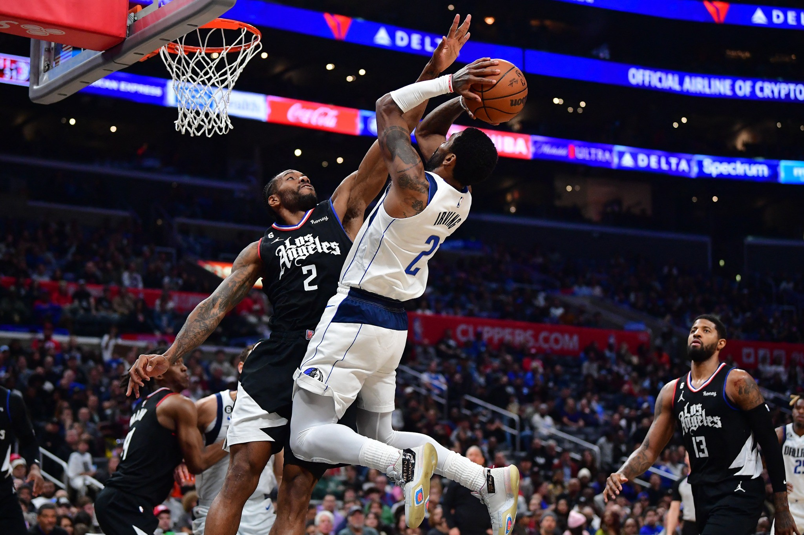

Chapter 04 · Game Impact Index
Game Impact Index

Как читать GI
GI предназначен для сравнения влияния на игру внутри выбранной модели. Он не заменяет PTS, REB, AST или другие первичные показатели.
Рейтинг по GI
| # | Игрок | POS | PTS | REB | AST | TS% | GI |
|---|